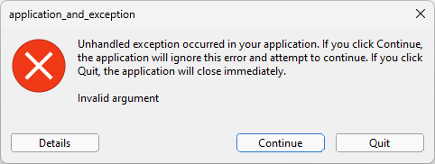
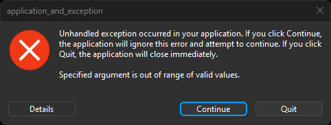
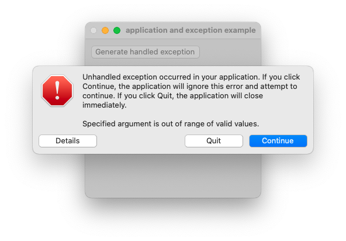
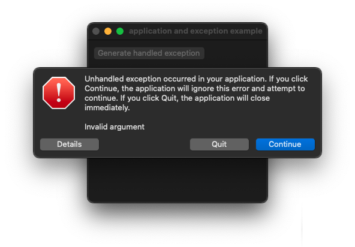
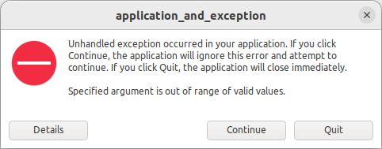
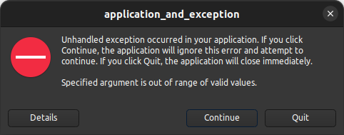

|
xtd
0.2.0
|
Loading...
Searching...
No Matches
application_and_exception.cpp
Shows how to create an application with xtd::forms::application class and how to manage exception.
- Windows
- 

- macOS
- 

- Gnome
- 

#include <xtd/forms/application>
#include <xtd/forms/button>
#include <xtd/forms/form>
#include <xtd/forms/message_box>
#include <xtd/operation_canceled_exception>
#include <xtd/startup>
#include <stdexcept>
using namespace xtd;
using namespace xtd::forms;
public:
static auto main() {
application::run(main_form());
}
main_form() {
text("application and exception example");
// Uncomment the following line to raise the exception in main entry point :
//throw system_exception {};
generate_handled_exception_button.auto_size(true);
generate_handled_exception_button.location({10, 10});
generate_handled_exception_button.parent(*this);
generate_handled_exception_button.text("Generate handled exception");
generate_handled_exception_button.click += event_handler(*this, &main_form::generate_handled_exception);
generate_std_exception_button.auto_size(true);
generate_std_exception_button.location({10, 50});
generate_std_exception_button.parent(*this);
generate_std_exception_button.text("Generate std exception");
generate_std_exception_button.click += event_handler(*this, &main_form::generate_std_exception);
generate_xtd_exception_button.auto_size(true);
generate_xtd_exception_button.location({10, 90});
generate_xtd_exception_button.parent(*this);
generate_xtd_exception_button.text("Generate xtd exception");
generate_xtd_exception_button.click += event_handler(*this, &main_form::generate_xtd_exception);
generate_unknown_exception_button.auto_size(true);
generate_unknown_exception_button.location({10, 130});
generate_unknown_exception_button.parent(*this);
generate_unknown_exception_button.text("Generate unknown exception");
generate_unknown_exception_button.click += event_handler(*this, &main_form::generate_unknown_exception);
}
private:
void generate_handled_exception() {
try {
message_box::show(*this, e.message(), string::format("Exception {} handled", e.get_type().full_name()));
}
}
void generate_std_exception() {throw std::invalid_argument("Invalid argument");}
void generate_unknown_exception() {throw "Unknown exception occured";}
button generate_handled_exception_button;
button generate_std_exception_button;
button generate_xtd_exception_button;
button generate_unknown_exception_button;
};
startup_(main_form::main);
The exception that is thrown when one of the arguments provided to a method is out of range.
Definition argument_out_of_range_exception.hpp:22
static void run()
Begins running a standard application message loop on the current thread, without a form.
Represents a window or dialog box that makes up an application's user interface.
Definition form.hpp:54
static dialog_result show(const iwin32_window &owner)
Displays a message box in front of the specified window.
The exception that is thrown in a thread upon cancellation of an operation that the thread was execut...
Definition operation_canceled_exception.hpp:18
The exception that is thrown when a method call is invalid for the object's current state.
Definition system_exception.hpp:18
#define startup_(main_method)
Defines the entry point to be called when the application loads. Generally this is set either to the ...
Definition startup.hpp:167
The xtd::forms namespace contains classes for creating Windows-based applications that take full adva...
Definition texts.hpp:219
Contains classes that represent ASCII and Unicode character encodings; abstract base classes for conv...
Definition basic_string_builder.hpp:17
The xtd namespace contains all fundamental classes to access Hardware, Os, System,...
Definition abstract_object.hpp:8
Generated on Wed Jun 25 2025 09:04:29 for xtd by Gammasoft. All rights reserved.